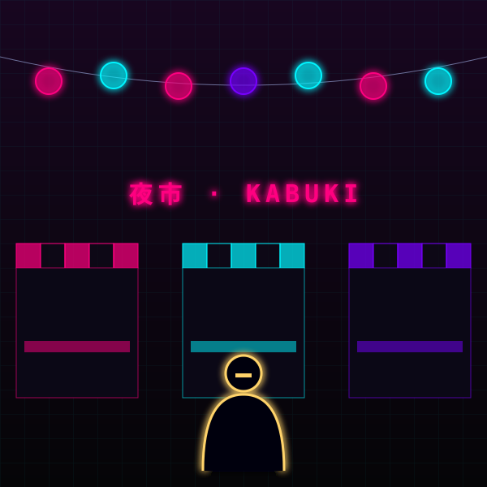

STŘEP KYUUBI · 17:30:12
Noční trh v Kabuki. Mezi stánky s nudlemi a kradenými implantáty sedí překupník. Zlaté zuby, ještě zlatější prsteny.
„Mám pro tebe kšeft. Doručíš balík do Watsonu a dostaneš edáče na deck.“
Pak se nakloní blíž: „Anebo mi prodáš tu bělovlasou. Kyuubi za ni platí víc.“
